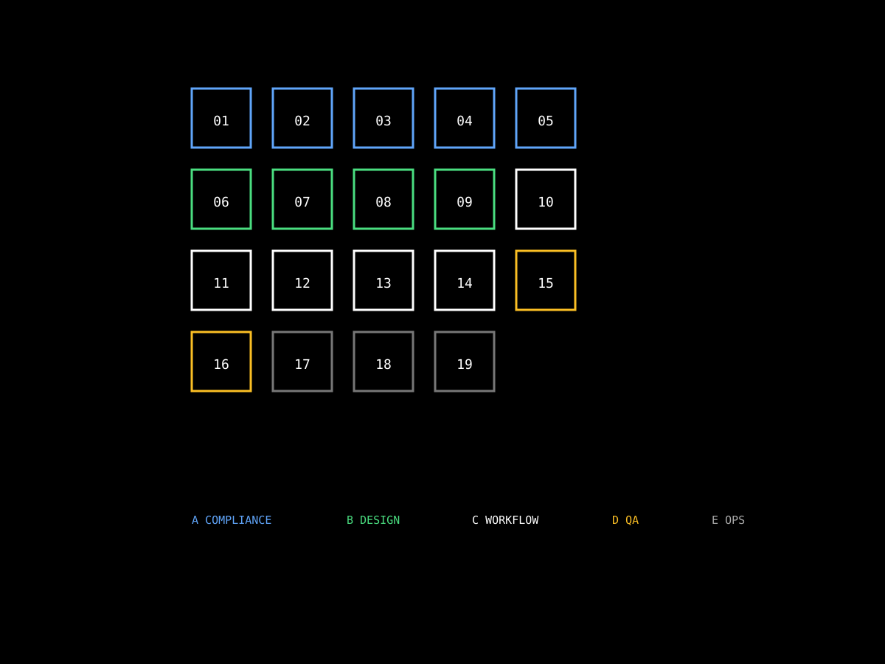

Skills 是編排（orchestration），不是知識本身。一個 Skill 規定「什麼關鍵字觸發 / 呼叫哪些工具 / 套用哪個 Domain SOP」。Skill metadata 永遠常駐於 AI Client context；body 與 Domain 被引用時才載入。本頁列 19 個 Skill 的描述、觸發關鍵字與對應 Domain。
何時觸發 + 呼叫哪些 tool + 什麼順序。19 個。
法規條文、SOP、計算公式。40 個。被 Skill 引用。
原子操作（query / create / modify）。88 個 MCP tools。
「不要把每個 Domain 都升級成 Skill」——這是本專案的核心架構原則。詳見 22 命題。
複製給合作對象 / 列印貼牆。

| Skill | 分類 | 用途 | 主 Domain |
|---|---|---|---|
/fire-safety-check | A 法規 | 防火時效 / 走廊 / 外牆開口 | fire-rating / corridor / exterior-wall |
/smoke-exhaust | A 法規 | 無窗居室 / 排煙有效面積 | smoke-exhaust-review |
/building-compliance | A 法規 | 採光比 / 容積率 / 停車 | daylight / floor-area |
/parking-check | A 法規 | 淨空高度 / 數量分類 | parking-clearance / parking-space-review |
/wall-orientation-check | A 法規 | 外牆 Exterior/Interior Side | wall-check |
/curtain-wall | B 設計 | 帷幕牆面板配置 | curtain-wall-pattern |
/facade-generation | B 設計 | AI 立面面板生成 | facade-generation |
/element-coloring | B 設計 | 依參數值上色 | element-coloring-workflow |
/element-query | B 設計 | 三階段查詢協議 | element-query-workflow |
/auto-dimension | C 文件 | Ray-Cast / BoundingBox 標註 | auto-dimension-workflow |
/detail-component-sync | C 文件 | AE-numbering 編號同步 | detail-component-sync |
/dependent-view-crop | C 文件 | 網格邊界批次裁剪 | dependent-view-crop-workflow |
/sheet-management | C 文件 | 批建圖紙 / 圖號修正 / 視埠 | sheet-viewport-management |
/stair-hidden-line | C 文件 | 剖面樓梯虛線 | stair-hidden-line-workflow |
/detect-clashes | D 分析 | MEP × CSA 碰撞 | mep-csa-clash-detection |
/qa-review | D 分析 | 專案品質檢核 | qa-checklist |
/build-revit | E 運維 | 多版本 build | (deployment-guide) |
/deploy-addon | E 運維 | DLL 部署 | (deployment-guide) |
/claude-md-sync | E 運維 | CLAUDE.md 雙向同步 | path-maintenance-qa |
40 Skill metadata 全部常駐 → AI context window 被吃掉一大塊 → 真正需要時反而找不到。
且重複邏輯——防火 SOP 同時被消防、走廊、合規三個 Skill 引用，搬到各自 Skill body 內就重複三次。
Skill = 編排（19 個 metadata 常駐）；Domain = 知識（40 markdown，被引用才載入）。
知識複用，編排薄層。一個防火 SOP 被三個 Skill 共享，原文只有一份。